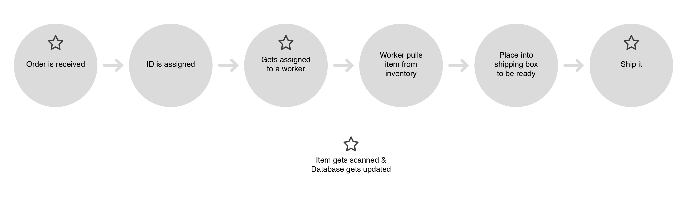

gravity
RFP Response
December 1, 2015
Table of Contents
- Problem Statement
- Assumptions
- Out of Scope
- Planned Technologies
- Project Management Approach
- Proposed Development Schedule
- Incremental Development
- Task Details
Problem Statement Part 1
Develop an Open Source Application to Manage the Inventory, Fulfillment, and Internal Tracking within a Material Handling Environment (Warehouse).
Problem Statement Part 2
This system will specifically track:
- Orders
- Items
- Workers
- Pods (shelves of items)
Assumptions
- This system is for a single warehouse
- Bots and Pods will be treated as a single item
- Activites outside the warehouse "walls" will not be managed
- New items will be readily available for replenishment
Out of Scope
- Shopping cart or ordering system
- Tracking Bots
- Management of 3rd party sellers
- Tracking the shipping of items (i.e. in transit, arrival)
- Floorspace of warehouse (location and optimization of pods, bots, workers)
Planned Technologies
Please list the technologies from the RFP here.
Project Management Approach
- 15 minute scrum will kick off each Lab Session
- Scrum will identify goals for each sprint
- PM will assign tasks to developers to meet each set of scrum goals
- Each sprint will be self-contained; activities should not roll over into the next sprint
- Activity durations will be estimated before each sprint begins
- If a Developer would like to work ahead, proposed activities need to be coordinated with the PM.
Teams
- During the daily scrum, developers will be broken into code pairs
- One or two developers will be floating code help / code QA
- Code QA will be a rotating position so that all developers will have an opportunity to perform that role
- Teams will be dynamic, both in terms of membership and tasks assigned
- If a task needs further development and is identified during the daily scrum, the previous developer team has the option to continue work
Proposed Development Schedule
- Lab 2: Order Tracking, v1
- Lab 3: Item Tracking, v1
- Lab 4: Worker and Pod Tracking, v1
- Lab 5: Order Tracking, v2
- Lab 6: Item Tracking, v2
- Lab 7: Worker and Pod Tracking, v2
- Lab 8: Loose Items, Project Wrap-Up
Workflow diagrams will be created and updated at the start of each sprint.
Incremental Development
We will develop for one order with one item assigned to one worker and one pod.
Once the process is devloped for the simple case, complexity will be added.
Durations for each activity are either dictated by frequency tables or will be given estimated values
Order Tracking Process, v1: Steps
- Order is recieved at /order/new
- Order contains items, quantities and shipping address
- Order is assigned an internal tracking number and timestamp when ordered was recieved
- Order is assigned to a (single) Packer
- Worker completes order
- Order is verified by a (single) Quality Inspector
- Order is assigned shipping information and is shipped
Order Tracking Process, v1: Flow Chart

Order Tracking Process, v1: Enpoints
The following are potential endpoint information for the order process,v1
- Status of a particular order (recieved, assigned, packed, inspected, shipped)
- Assigned workers for an order (Packer, Quality)
- Shipping information for an order (method, tracking number)
- Time to complete an order
Order Tracking Process, v2: Steps
- Order is recieved at /order/new
- Order contains items, quantities and shipping address
- Order is assigned an internal tracking number and timestamp when ordered was recieved
- Order is assigned to an available Packer
- Worker completes order
- Order is verified by an available Quality Inspector
- If an issue is found, order is assigned an available Problem Solver
- Order is assigned to a Shipper; shipping information is created and is shipped
Order Tracking Process, v2: Enpoints
The following are potential endpoint information for the order process, v2:
- Status of a particular order (recieved, assigned, packed, inspected, problem solving, shipped)
- Assigned workers for an order (Packer, Quality, Problem Solver, Packer)
- Shipping information for an order (method, tracking number)
- Time to complete an order
- Roll-up info: amount of orders at each stage, average time to complete an order...
Item Tracking Process, v1: Steps
- Items are recieved and assigned to a Pod
- Items are pulled from a Pod and placed into a Package to complete an order
- If quantity of an item falls below a threshold, a replishment order is triggered
Item Tracking Process, v1: Enpoints
The following are potential endpoint information for the item tracking process,v1
- Status of a particular item (roll-up: quantity on hand, number shipped over a timeframe, specific pods holding the item)
- List of orders containing that item
Item Tracking Process, v2: Steps
- Items are recieved and assigned to a Quality Assurance Worker
- Items that pass QA are assigned an available Pod. Items that don't are sent to a Problem Solver.
- Items are pulled from a Pod and placed into a Package to complete an order
- If quantity of an item falls below a threshold, a replishment order is triggered
Item Tracking Process, v2: Enpoints
The following are potential endpoint information for the item tracking process, v2:
- Status of a particular item (roll-up: quantity on hand, number shipped over a timeframe, specific pods holding the item, quantity in inspection, quantity in problem solving, number on order)
- List of orders containing that item
Worker Tracking Process
- Workers can be Quality Assurance (items), Problem Solvers (items), Packers, Quality Assurance (packages), Problem Solvers (packages) and Shippers
- Each worker will need slightly different sets of data. For example, a Packer will need to know what orders have been assigned and what items are in the order.
- This data will be mapped out in a future lab
Worker Tracking Process: Enpoints
The following are potential endpoint information for the worker tracking process
- Status of a particular worker (orders they are currently assigned, working on and completed).
- Roll-up of number of workers performing certain tasks and durations. This data could be used for warehouse optimization.
Worker Tracking Process v1 vs v2
V1 activities will integrate order and item tracking from V1
V2 activities will integrate order and item tracking from V2
Pod Tracking Process
- Pods have limited storage. Once a pod is filled with items, no more items can be added.
- Pods will need to know what items are on the pods
- Pods will need to know if they are (1) being loaded with items, (2) being idle, (3) at a worker's station, or (4) in maitenance
Pod Tracking Process: Enpoints
The following are potential endpoint information for the pod tracking process
- Status of a particular pod (items on a pod, status).
- Roll-up of number of pods at various stations, roll-up of pods containing a certain item. This data could be used for warehouse optimization.
Pod Tracking Process v1 vs v2
V1 activities will integrate order and item tracking from V1
V2 activities will integrate order and item tracking from V2
Pod Queque and Maitenance activities will be part of v2